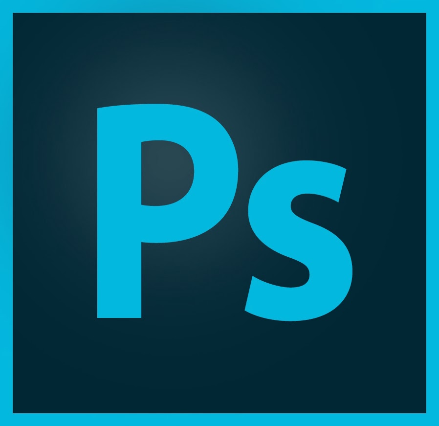

This career to what ivreseached so far what im intrested is basically relating to grahpic design/digital. this career covers grahpic design which could branch off many such as art, web designing, photoshop and more!
This career has many options to what kind of grahphic class relating it to. An theres a veriety of choices for everyone that is capable of.
